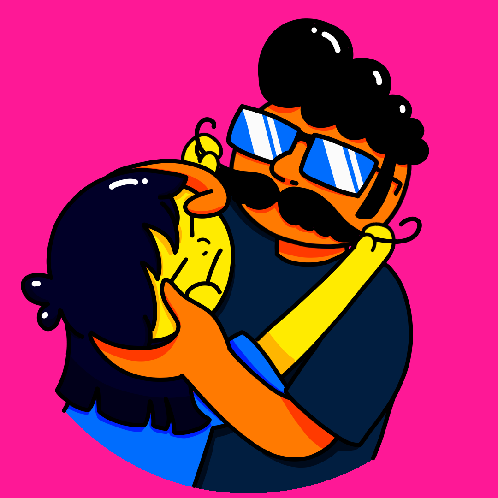
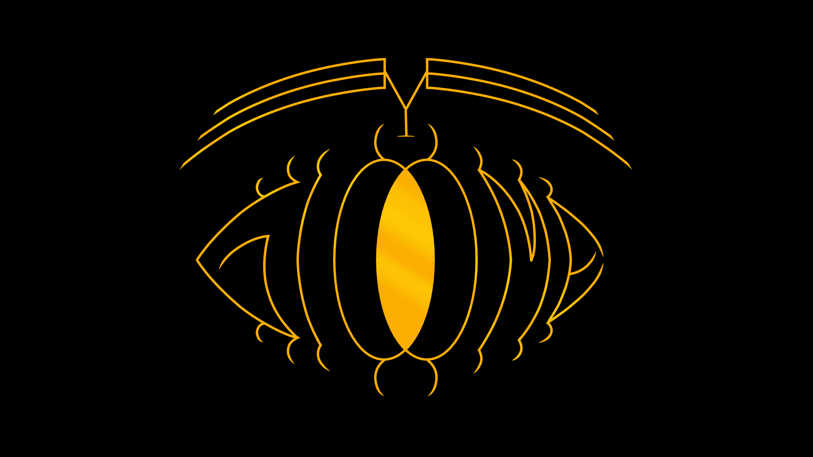
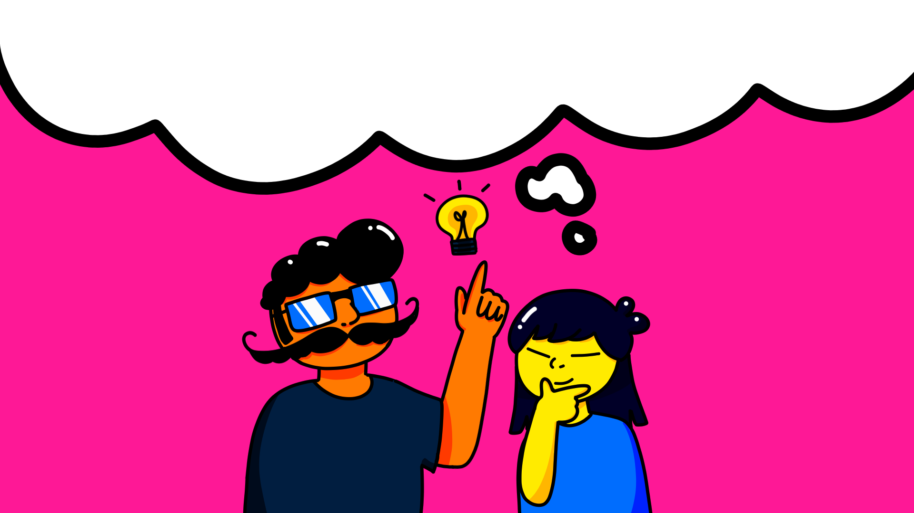

Toggle theme
Tema Claro
Tema Escuro
Auto

Duds & Mo Productions
Home
Nossa Graphic Novel
Nossos Jogos
Loja

Eye Gloome
Our greatest adventure so far
Go to page
Stickers
Come and get one
Go to page
Games
Mystery, action, comedy, we got it all
Go to page
Previous
Next
